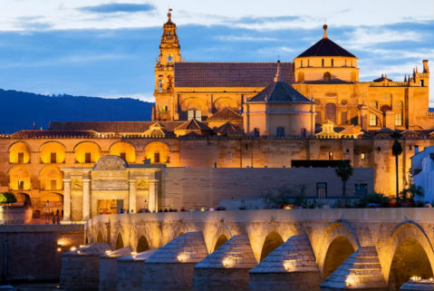

Mezquita
Mezquita-catedral de Córdoba,Santa María Madre de Dios» o «Gran Mezquita de Córdoba», actualmente conocida como la Catedral de la Asunción de Nuestra Señora de forma eclesiástica, es un edificio de la ciudad de Córdoba, España. En 2019 superó los dos millones de visitantes, siendo su récord histórico y convirtiéndolo en uno de los monumentos más visitados de España. Se empezó a construir como mezquita en el año 786; hasta hace poco se creía que tras la apropiación por los conquistadores musulmanes de la basílica hispanorromana de San Vicente Mártir4 y la reutilización de parte de los materiales, quedando reservada al culto musulmán, pero los estudios arqueológicos mas recientes descartan esta hipótesis5. El edificio fue objeto de ampliaciones durante el Emirato de Córdoba y el Califato de Córdoba. Con 23 400 metros cuadrados, fue la segunda mezquita más grande del mundo en superficie, por detrás de la Mezquita de La Meca, siendo sólo alcanzada posteriormente por la Mezquita Azul (Estambul, 1588). Una de sus principales características es que su muro de la qibla no fue orientado hacia La Meca, sino 51º grados más hacia el sur, algo habitual en las mezquitas de al-Ándalus.